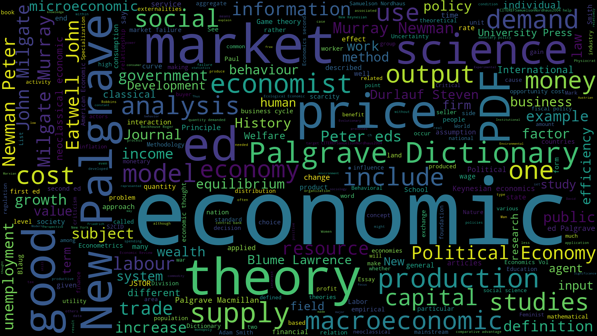
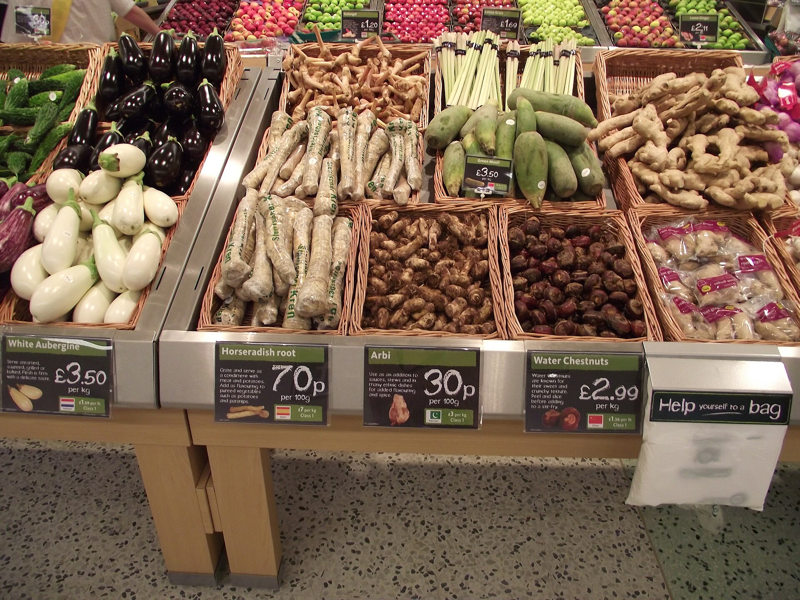

What can it show you about your corpus, and what can it not?
Every word ranked by how often it appears. "Natural" shows up 40 times, "tested" twice.
The same counts drawn as sized text. Fast to read, easy to over-trust.
Every place a word appears, shown in its surrounding line, so you see how "natural" is actually used.
Words that keep showing up next to each other, like "all natural" or "clinically proven."
Tools count. You interpret.

What does the concordance say that a count never could?
On your own first, then run it if your corpus is ready as searchable text.
Go.